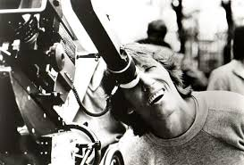
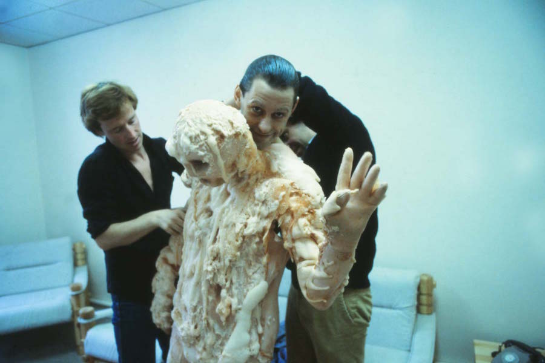
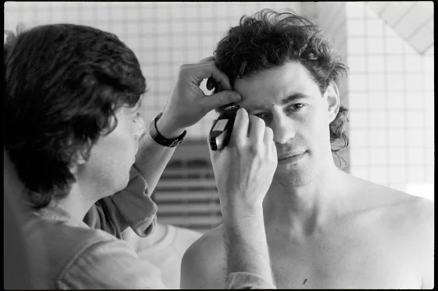
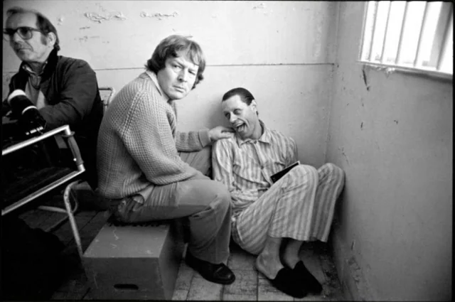
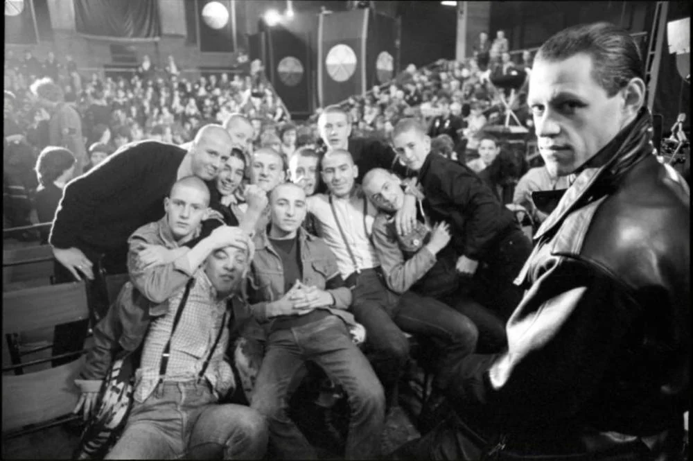
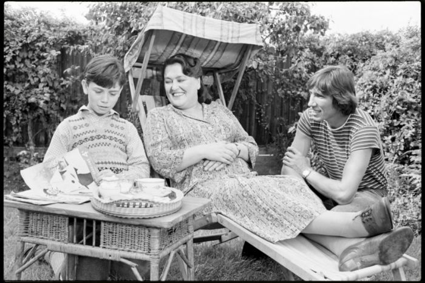
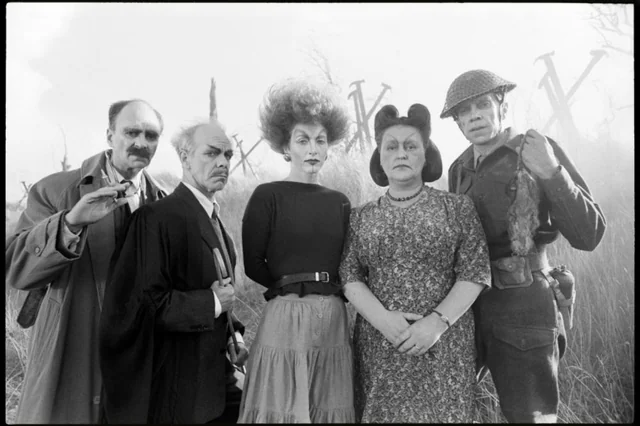
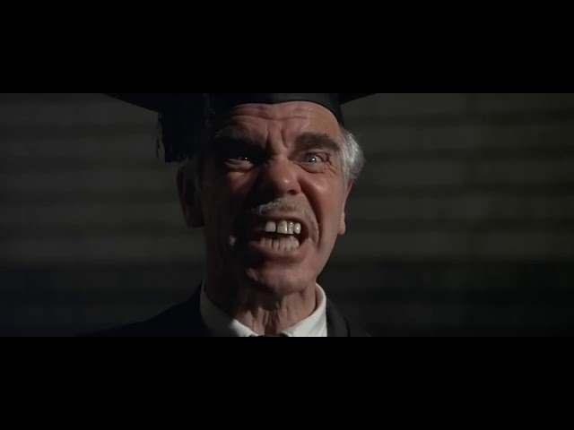
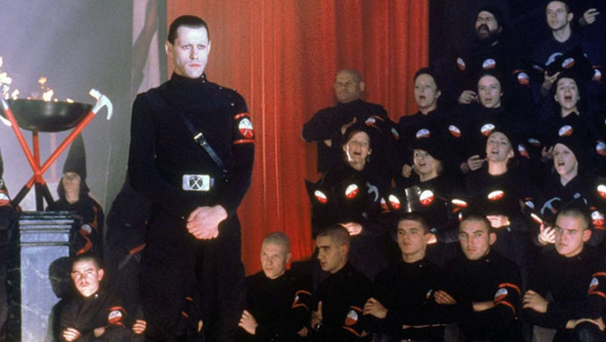

Rodaje
Parker, Waters y Scarfe chocaron frecuentemente durante la producción, y Parker describió el rodaje como "una de las experiencias más miserables de mi vida creativa". Scarfe declaró que conducía hasta los estudios Pinewood llevando una botella de Jack Daniel's , porque "tenía que tomar un trago antes de ir por la mañana, porque sabía lo que se avecinaba y sabía que tenía que fortalecerme de alguna manera". Waters dijo que el rodaje fue "una experiencia muy inquietante y desagradable".






Curiosidades durante la producción
Durante la producción, mientras filmaba la destrucción de una habitación de hotel, Geldof sufrió un corte en la mano al quitar las persianas venecianas. El metraje permanece en la película.
Se descubrió durante el rodaje de las escenas de la piscina que Geldof no sabía nadar.
Las escenas de guerra se filmaron en Saunton Sands, en el norte de Devon, lugar que también apareció en la portada de A Momentary Lapse of Reason de Pink Floyd seis años después.
La banda sonora de la película contiene la mayoría de las canciones del álbum, aunque con algunos cambios, así como material adicional. Las únicas canciones del álbum que no aparecen en la película son " Hey You " y " The Show Must Go On "



El siguiente video es un documental que profundiza en la producción de la película